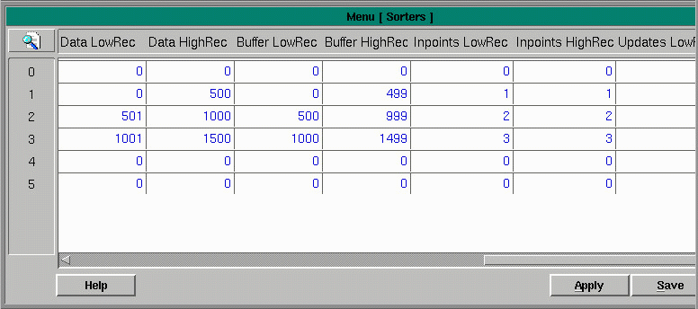

This menu displayed is known as the Sorters Table and is where you set up the sorter parameters. Each record in this menu is a length of conveyor where product is tracked through an encoder or a timer.
 |
The following fields are included in this menu:
Sorter Name - type in the name of the sorter.
Encoder ioName - pull down into the Encoders Menu.
Encoder tmName - pull down into the timer menu.
Encoder Type - a value of '0' indicates use of an encoder where a value of '1' indicates a timer.
Max Cartons - enter the maximum number of cartons per minute that can be put onto the sorter.
Max Verify Buffer - size of the verify buffer.
Dump NDX - used when shifters are chained together.
Dump OUT - used when shifters are chained together.
Dump IN - used when shifters are chained together.
Last NDX - this is set by the software and is not user configurable.
OK - this field is filled in by the software to tell you if it thinks that the shifter is set up properly.
ShiftOnOff - is used to increase the resolution of an encoder.
TrigOnOnly - will look at a trigger.
MaxNdx - the largest index for this sorter.
Machine - pull-down into the machine menu from which to select the machine responsible for this shifter.
Manual Shift - a boolean value.
Shifted - manipulated and used internally.
DataLowRec - for each sorter there is a beginning point and and ending point. The number of records in between represent the amount of possible product on the sorter.
DataHighRec - the next sorter can begin where this one ends.
BufferLowRec - the buffer section assigned to each sorter represents the length of the sorter in ticks. Some encoders have a resolution of 5 ticks per foot and some are 12 ticks per foot. If for example, our encoder gives 10 ticks per foot and the length we want to track is 12 feet then we need 120 as a minimum between our BufferLowRec and BufferHighRec. As a rule, allow plenty of extra.
BufferHighRec - a number representing the high range of this sorter.
InpointsLowRec - each sorter typically has one point of induction. The number of records needed in inpoints would be the number of points of induction. Fills in automatically from the Inpoints Menu.
InpointsHighRec - if only one induct, the high rec and low rec are the same. Fills in automatically.
UpdatesLowRec - Fills in automatically from the Updates Menu.
UpdatesHighRec - The upper range of update points. Fills in automatically.
OutpointsLowRec - Automatically fills in the low range of the outpoints configured for this sorter.
OutpointsHighRec - Automatically fills in the high range of the outpoints configured for this sorter.
Copyright © 2001 Fortna Inc. All rights reserved.